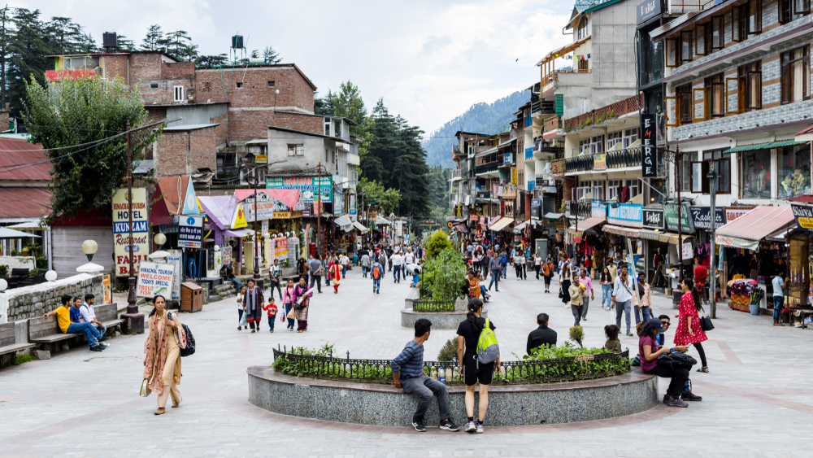

Images

Description
Mall Road in Manali is a bustling street located in the heart of the town. It is a famous shopping destination and a hub of activity for both locals and tourists. The road stretches for about 1.5 km and is lined with shops, restaurants, cafes, and hotels. Here's a closer look at Mall Road and why it is a must-visit destination in Manali: Shopping Mall Road is famous for its unique handicrafts, including shawls, caps, carpets, and wooden artifacts. The street is lined with shops that offer a range of products, from traditional Himachali clothes to souvenirs to take back home. Bargaining is an essential skill when shopping on Mall Road, and you can get some great deals if you're good at it.